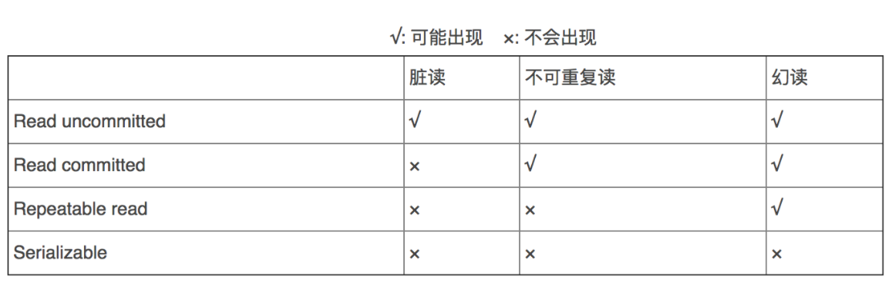

关系型数据库(MySQL) 数据库分类 关系型数据库(SQL)
如mySQL SQLserver Oracle
通过表和表之间,行列之间的关系进行数据的存储非关系型数据库(NoSQL)
如Redis, MongDB
对象存储(如key: value), 通过对象自身的属性来决定
MySQL 安装以及常用命令行 下载mysql 安装mySQL教程:https://mp.weixin.qq.com/s/E1PM4EHwU6Joot4OG0gDjw
可自行前往官网下载,不建议使用最新版本(不稳定),随后解压到自己想要安装的地方
压缩版5.7版本下载地址: https://dev.mysql.com/get/Downloads/MySQL-5.7/mysql-5.7.19-winx64.zip
编写相关配置文件 在mysql安装目录下 ,新建一个my.ini文件 ,文件内容如下(具体配置自行修改)
1 2 3 4 5 [mysqld] basedir=D:\Program Files\mysql-5.7\ datadir=D:\Program Files\mysql-5.7\data\ port=3306 skip-grant-tables
注意:没有data文件夹自己新建一个,与上面配置文件一致
配置环境变量(非必须) 配置环境变量可以让我更方便的全局使用命令行, 一下默认有jdk的相关配置基础,默认不具体放图
在系统变量中新建变量名为MySQL ,值为mysql的安装目录,在原有的系统变量Path 中,添加值 %MySQL%\bin
(其实也就是相对路径映射)
安装和初始化mysql
在window下进入管理员权限的dos窗口(使用系统的搜索工具搜索cmd,然后选中右击以管理员身份运行即可进入)
随后输入命令mysqld –install (注意:没有配置变量请切换mysql的安装目录使用此命令)dos系统切换目录的命令是 cd 目录,更多请自行访问DOS命令大全
安装好后再输入初始化命令mysqld --initialize-insecure --user=mysql (注意一定要先配置好my.ini文件)
随后输入命令net start mysql启动服务
最后链接数据库即可(链接命令在下文的常用命令那里有)
常用命令 **注意:**使用命令行配置系统环境变量可以不用切换到bin目录,注意,在使用安装命令和初始化命令时,请打开管理员权限的dos窗口
1 2 3 4 5 6 7 8 9 10 11 12 13 14 15 16 mysqld –install mysqld --initialize-insecure --user=mysql net stop mysql net start mysql mysql -uroot -p update mysql.user set authentication_string=password('123456' ) where user='root' and Host = 'localhost' ; flush privileges; show databases; use 数据库名; show tables; describe 表名; create database exit ;
用于获取sql的一些命令 1 2 show create table 表名 desc 表名;
关于mysql一些知识 mysql数据库的字符集编码 mysql的默认字符集编码是Latin1 ,不支持中文
在创建数库表时设置1 2 3 4 5 6 7 CREATE TABLE `user ` ( `id` int (10 ) NOT NULL , `name` varchar (10 ) NOT NULL , `sex` varchar (4 ) DEFAULT NULL , `birthday` date DEFAULT NULL , PRIMARY KEY (`id`) ) ENGINE= InnoDB DEFAULT CHARSET= utf8
在my.ini配置文件中设置默认编码(不推荐): 1 character-set-server=utf8
mysql的数据库引擎
INNODB
MYISAM
事务支持
支持
不支持
数据行锁定
支持
不支持
外键约束
支持
不支持
全文索引
不支持
支持
表空间的大小
较大,为myisam的两倍
较小
常规使用操作:
MYISAM 节约空间，速度较快
INNODB 安全性高，事务的处理，多表多用户操作
**在物理空间存在的位置:**所有的数据库文件都在data目录下,本质还是文件的存储！
Mysql引擎在物理引擎文件上面的区别
innoDB 在数据库表中只有一个**fm文件
*.frm表结构的定义文件
.MYD文件 数据文件 **.MYI 索引文件
mysql 的常用数据类型 数值
int 4 字节 比较常用
bigint 8字节
float 浮点数 4字节数
double 浮点数 8字节
decimal 字符串形式的浮点数 (用于金融计算)
字符串
char 固长字符串(0-255)
varchar 可变字符串(0-65535)
tinytext 微型文本 2^8-1
text 文本串 2^16-1
日期时间(以字面量表示要有引号)
date YYYY-MM-DD ,日期格式
time HH:mm:ss 时间格式
datetime YYYY-MM-DD HH:mm:ss 最常用的时间格式
timestamp 时间戳 1970年1月1日到现在的毫秒数
mysql常用函数 数学函数:
ABS() : 返回绝对值 abs
CEILING() : 天花板函数 ceiling
FLOOR() : floor 地板函数
RAND() – 返回0-1的随机数 rand()
字符串函数:
CHAR_LENGTH(‘字符串’) : char_lengrh 返回字符串长度
CONCAT(‘字符串’,’字符串’) : concat 拼接字符串
INSERT(‘字符串’,int,int,’字符串’) : insert 从指定位置替换字符串
UPPER(‘字符串’) : 转大写母
LOWER(‘字符串’) : 转小写字母
REPLACE(‘字符串’,’指定的’,’替换后的’) perlace 替换指定的字符串
日期函数
CURRENT_DATE() – 获取当前日期,current_date()
CURDATE() – 获取当前日期 curdate()
NOW() – 获取当前日期 now()
LOCATIME() – 本地时间 localtime ()
SYSDATE() – 系统时间 sysdate()
系统函数
SYSTEM_USER()
USER()
VERSION()
1 2 3 4 5 6 7 8 9 10 11 12 13 14 15 16 17 18 19 20 21 22 23 24 25 26 27 28 29 30 31 SELECT ABS (-8 ) SELECT CEILING (9.4 ) SELECT FLOOR (9.4 ) SELECT RAND() SELECT SIGN(-10 ) SELECT CHAR_LENGTH ('2323232' ) SELECT CONCAT('我' ,'233' ) SELECT INSERT ('java' ,1 ,2 ,'cccc' ) SELECT UPPER ('abc' ) SELECT LOWER ('ABC' )SELECT REPLACE('坚持就能成功' ,'坚持' ,'努力' )SELECT REPLACE(studentname,'周' ,'邹' ) FROM studentWHERE studentname LIKE '周%' SELECT CURRENT_DATE () SELECT CURDATE() SELECT NOW() SELECT LOCATIME() SELECT SYSDATE() SELECT YEAR (NOW())SELECT MONTH (NOW())SELECT DAY (NOW())SELECT HOUR (NOW())SELECT MINUTE (NOW())SELECT SECOND (NOW())SELECT SYSTEM_USER ()SELECT USER ()SELECT VERSION()
聚合函数
函数名称
描述
COUNT()
计数
SUM()
求和
AVG()
平均值
MAX()
最大值
MIN()
最小值
其中
count(字段,尤其是主键)效率最高
count(1) 效率略高于count(＊)
count(＊) 在只有一个字段时会优于count(1)
### mysql中的数据表
修改表字段 1 2 3 4 5 6 ALTER TABLE 旧表名 RENAME AS 新表名 ALTER TABLE 表名 ADD 字段名 数据类型号 约束 ALTER TABLE 表名 MODIFY 字段名 VARCHAR (11 ) ALTER TABLE 表名 CHANGE 字段名 新字段名 INT (1 ) ALTER TABLE 表名 if exists DROP 字段名
DML语言 TRUNCATE和TRUNCATE的区别
相同点： 都能删除数据，都不会删除表结构
不同：
mysql事务
**原子性（Atomicity）:**要么都成功，要么都失败
一致性（Consistency）: 事务前后的数据完整性要保持一致持久性（Durability): 事务一旦提交就不可逆转，被持久化到数据库中,提交不成功就恢复原状隔离性: 事务产生多并发时，互不干扰
事务隔离级
Read UnCommitted(读未提交)
Read Committed(读提交)
Repeatable Read(重复读)
Serializable(序列化)
事务隔离级常见问题: 参考链接: https://www.cnblogs.com/balfish/p/8298296.html
脏读: 指一个事务读取了另外一个事务未提交的数据(即不要的数据,脏的数据).这跟不可重复读类似，但是第二个事务不需要执行提交。虚读(幻读): 是指在一个事务内读取到了别的事务插入的数据，导致前后读取不一致。（重点是可能由于其他数据插入了所需要查询的数据,行数变了导致不一样）**不可重复读:**在一个事务内读取表中的某一行数据，多次读取结果不同。（重点是由于别的事务对数据进行了更改,导致两次读取的值不一样）

规范数据库设计 糟糕的数据库设计:
数据冗余,浪费空间
数据库插入和删除都会麻烦,异常(屏蔽使用物理外键)
程序的性能差
良好的数据库设计:
节省内存空间
保证数据库的完整性
方便我们开发系统
软件开发中,关于数据库的开发设计:
三大范式 注:每个范式都必须满足前一个范式
第一范式(1NF) 原子性: 保证每一列不可再分
第二范式(2NF) 完全依赖:非主属性完全依赖于主键
第三范式(3NF) 消除传递依赖:非主属性必须直接依赖于主键
规范性和性能的问题 关联查询的表不得超过三张表
考虑商业化的需求和目标,数据库性能更重要
在规范性能问题时,适当考虑规范性
故意给某些表增加一些冗余字段(从表查询变为单表查询)
故意增加一些计算列(从大数据量降低为小数据量的查询:索引)
JDBC(重点)
JDBC介绍 Sun公司为了简化开发人员的(对数据库的统一)操作,提供了(Java操作数据库的)规范,俗称JDBC,这些规范的由具体由具体的厂商去做
所需要的jar包
java.sql(默认有)
javax.sql(默认有)
java程序链接mySQL ==注意! 增删改操作都需要提交事务==
步骤:
加载驱动
登陆链接数据库对象
创建statement对象,用于执行sql语句 statement(清单)
执行sql语句
返回结果集,结果集中封装了我们查询的所有结果
释放链接
1 2 3 4 5 6 7 8 9 10 11 12 13 14 15 16 17 18 19 20 21 22 23 24 25 26 27 28 Class.forName("com.mysql.jdbc.Driver" ); String url = "url=jdbc:mysql://localhost:3306/db01?serverTimezone=Asia/Shanghai&useUnicode=true&characterEncoding=utf-8&useSSL=true" ; String use = "root" ; String password = "123456" ; Connection connection = DriverManager.getConnection(url, use, password); Statement statement = connection.createStatement(); String sql = "SELECT * from class" ; ResultSet resultSet = statement.executeQuery(sql); while (resultSet.next()){ System.out.println("classno:" +resultSet.getNString("classno" )); System.out.println("classname:" +resultSet.getNString("classname" )); System.out.println("department:" +resultSet.getNString("department" )); System.out.println("monitor(班长):" +resultSet.getNString("monitor(班长)" )); System.out.println("==========================================================" ); } resultSet.close(); statement.close(); connection.close(); } }
几个重要对象 DirverManager 驱动管理
1 2 Class.forName("com.mysql.jdbc.Driver" ); DriverManager.registerDriver(new Driver ());
URL 资源地址
1 2 String url = "url=jdbc:mysql://localhost:3306/db01?serverTimezone=Asia/Shanghai&useUnicode=true&characterEncoding=utf-8&useSSL=true" ;
Connection 链接对象,操作数据库的对象
1 2 3 4 5 6 7 8 9 connection.commit(); connection.rollback(); connection.setAutoCommit(); ```java statement.executeQuery("sql" ); statement.executeUpdate("sql" ); statement.execute("sql" );
ResultSet:查询后的结果集
获取数据:
1 2 3 4 5 resultSet.getNString(); resultSet.getObject(); resultSet.getInt(); resultSet.getDate(); resultSet.getFloat();
指针移动:
1 2 3 4 5 resultSet.next(); resultSet.previous(); resultSet.absolute(); resultSet.beforeFirst(); resultSet.afterLast();
关闭链接
1 2 3 resultSet.close(); statement.close(); connection.close();
SQL注入的问题 SQL注入即是指web应用程序对用户输入数据的合法性没有判断或过滤不严，攻击者可以在web应用程序中事先定义好的查询语句的结尾上添加额外的SQL语句，在管理员不知情的情况下实现非法操作，以此来实现欺骗数据库服务器执行非授权的任意查询，从而进一步得到相应的数据信息。即:通过sql语句的漏洞来实现一些非法操作.
1 2 / / 欲根据用户id来进行获取用户的其他信息,但是使用如下语句就会将所有用户的信息都查询到select * from db01.user where (id = ' ' or 1 = 1 )"; --sql注入
PreparedStatement对象 可以防止sql注入,并且效率更高,如:在编辑sql语句时使用?代表占位符,并且预编译sql语句,随后在设置参数防止sql注入
常用方法: 1 2 3 4 5 6 preparedStatement.executeQuery(); preparedStatement.executeUpdate(); preparedStatement.setString(); preparedStatement.setInt(); preparedStatement.setDate(); ... 等等
例子:
1 2 3 4 5 6 7 8 String sql = "select * from db01.user where(id = ?)" ;preparedStatement = con.prepareStatement(sql); preparedStatement.setString(1 ,id); resultSet = preparedStatement.executeQuery();
解藕,封装工具类 我们可以将配置信息编写成配置文件(xxx.properties),然后通过Properties类读取文件内容对应参数来配置信息
配置文件db.properties, 我们需要将此配置文件放入字节码的相同路径(maven项目的resources目录下)
1 2 3 4 5 6 driver =com.mysql.cj.jdbc.Driver url =jdbc:mysql://localhost:3306/db01?serverTimezone=Asia/Shanghai&useUnicode=true&characterEncoding=utf-8&useSSL=true user =root password =123456
JdbcUtil类
1 2 3 4 5 6 7 8 9 10 11 12 13 14 15 16 17 18 19 20 21 22 23 24 25 26 27 28 29 30 31 32 33 34 35 36 37 38 39 40 41 42 43 44 45 46 47 48 49 50 51 52 53 54 55 56 57 58 59 60 61 62 63 64 65 66 67 68 69 70 71 72 73 74 75 76 77 78 79 80 81 82 83 84 85 86 87 88 89 90 91 92 93 94 95 96 97 98 99 100 101 102 103 104 105 106 107 108 109 110 111 112 113 114 115 116 117 118 119 120 121 122 123 124 125 126 127 128 129 130 131 132 133 134 135 136 137 138 139 140 141 142 143 144 145 146 147 package SQL_injection;import java.io.IOException;import java.io.InputStream;import java.sql.*;import java.util.Properties;public class JdbcUtility { static Properties properties = new Properties (); static Connection con = null ; static PreparedStatement preparedStatement = null ; static ResultSet resultSet = null ; static String username = null ; static String password = null ; static { InputStream in = JdbcUtility.class.getClassLoader().getResourceAsStream("db.properties" ); try { properties.load(in); JdbcUtility.class.forName(properties.getProperty("driver" )); } catch (Exception e) { e.printStackTrace(); } } public JdbcUtility () { try { String url = properties.getProperty("url" ); String user = properties.getProperty("user" ); String password = properties.getProperty("password" ); con = DriverManager.getConnection(url,user,password); } catch (SQLException throwables) { throwables.printStackTrace(); } } public JdbcUtility (String username,String password) { try { con = DriverManager.getConnection(properties.getProperty("url" ), username, password); } catch (SQLException throwables) { throwables.printStackTrace(); } } public boolean select (String id) { String sql = "select * from db01.user where(id = ?)" ; try { preparedStatement = con.prepareStatement(sql); preparedStatement.setString(1 ,id); resultSet = preparedStatement.executeQuery(); if (!resultSet.next()) { System.out.println("查询失败!" ); return false ; } } catch (SQLException throwables) { throwables.printStackTrace(); } return true ; } public void getResult () { try { do { System.out.print("id:" +resultSet.getString(1 )+"\t" ); System.out.print("name:" +resultSet.getString(3 )+"\t" ); System.out.print("sex:" +resultSet.getString(4 )+"\t" ); System.out.print("birthday:" +resultSet.getString(5 )+"\t" ); System.out.println(); } while (resultSet.next()); } catch (Exception e){ e.printStackTrace(); } } public void insert (String id ,String name,String sex ) { String sql = "insert into db01.user (id,name,sex,birthday) " + "values(?,?,?,?)" ; try { preparedStatement = con.prepareStatement(sql); preparedStatement.setString(1 ,id); preparedStatement.setString(2 ,name); preparedStatement.setString(3 ,sex); Date date = new Date (new java .util.Date().getTime()); preparedStatement.setDate(4 ,date); int n = preparedStatement.executeUpdate(); if (n == 0 ) System.out.println("插入失败!" ); } catch (SQLException throwables) { throwables.printStackTrace(); } } public void delete (String id) { String sql = "delete from db01.user where(id = ?);" ; try { preparedStatement = con.prepareStatement(sql); preparedStatement.setString(1 ,id); if (preparedStatement.executeUpdate()==0 ) System.out.println("删除失败!" ); } catch (SQLException throwables) { throwables.printStackTrace(); } } public void update (String id,String columnname,String value) { String sql = "update db01.user set " +columnname +" = ? where (id = ? )" ; try { preparedStatement = con.prepareStatement(sql); preparedStatement.setString(1 ,value); preparedStatement.setString(2 ,id); if (preparedStatement.executeUpdate()==0 ) System.out.println("更新失败" ); } catch (SQLException throwables) { throwables.printStackTrace(); } } public void close () { try { resultSet.close(); con.close(); preparedStatement.close(); } catch (SQLException throwables) { throwables.printStackTrace(); } } }
JDBC操作事务 ==注意! 增删改操作都需要提交事务==
常用方法 1 2 3 connection.setAutoCommit(boolean flag); connection.commit(); connection.rollback();
下面代码是模拟一笔转账操作,A账户减少100元,B账户增加100元,两个sql操作为一个事务,同时执行成功或者失败(失败事务发生回滚)
1 2 3 4 5 6 7 8 9 10 11 12 13 14 15 16 17 18 19 JdbcUtility jdbc = new JdbcUtility ();try { jdbc.con.setAutoCommit(false ); jdbc.update("A" ,true ); jdbc.update("B" ,false ); jdbc.con.commit(); } catch (SQLException throwables) { try { jdbc.con.rollback(); } catch (SQLException e) { e.printStackTrace(); } throwables.printStackTrace(); }
数据库链接池 池化技术:准备一些预先资源,过来就连接预先准备好的
1 2 3 4 5 6 数据库---＞执行完毕---＞释放 这种方式十分浪费资源 相关概念: 常用连接数: 10 最小连接数: 5 最大连接数: 15 等待超时: 100ms
连接池，必须实现接口 DateSource
开源数据源实现技术 使用了以下的数据库连接池后,我们以后项目开发中就不需要编写连接数据库的代码了 ,DBCP: Spring 推荐使用C3P0: Hibernate 推荐使用c3p0Druid: 阿里巴巴的技术1 2 3 4 5 6 7 8 9 static InputStream in = JdbcUtilityDemo.class.getClassLoader().getResourceAsStream("dbcpconfig.properties" );static Properties properties = new Properties ();static BasicDataSource dateSource = null ;properties.load(in); dateSource = BasicDataSourceFactory.createDataSource(properties); dateSource.getConnection();
总结: 使用数据库连接池本质上就是帮助开发人员省区来连接数据库的操作,使得我们只需要获取其来连接对象Connection即可